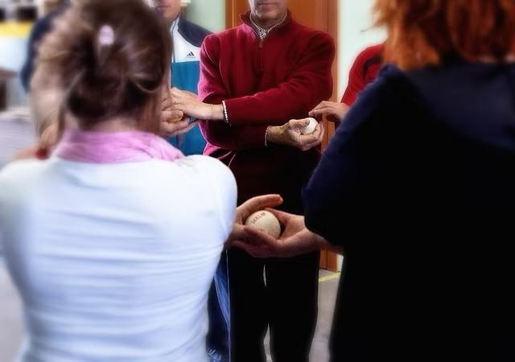
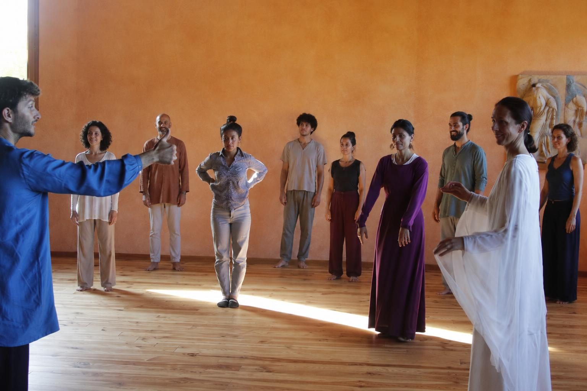
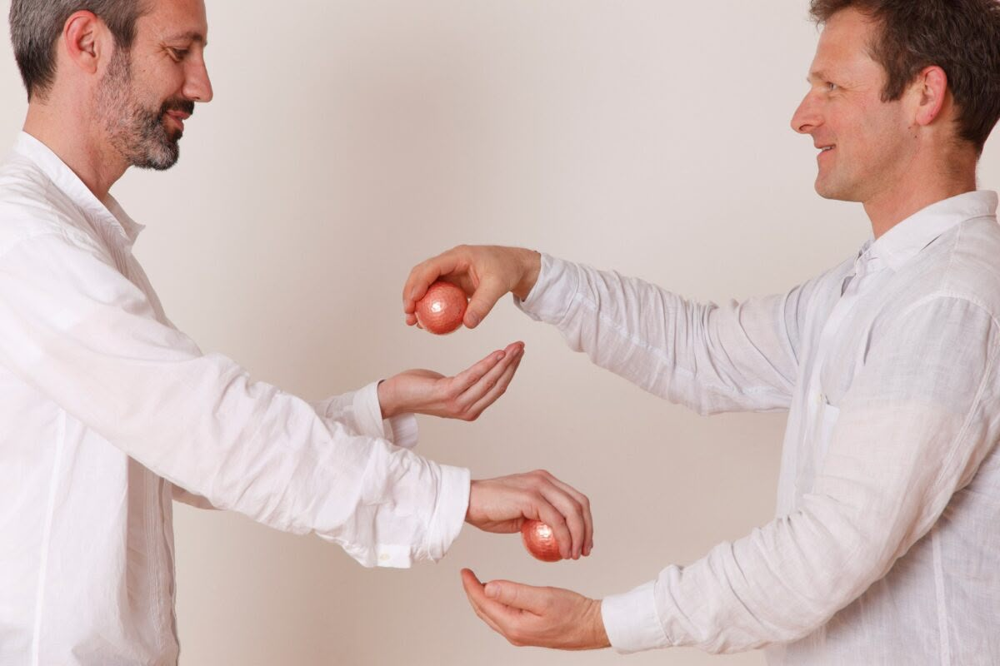
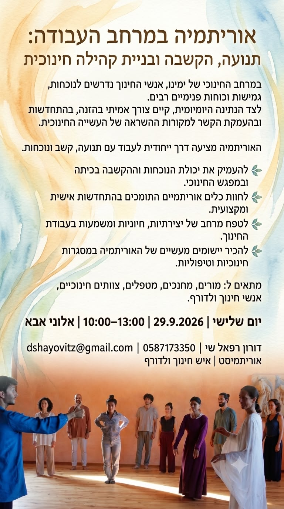
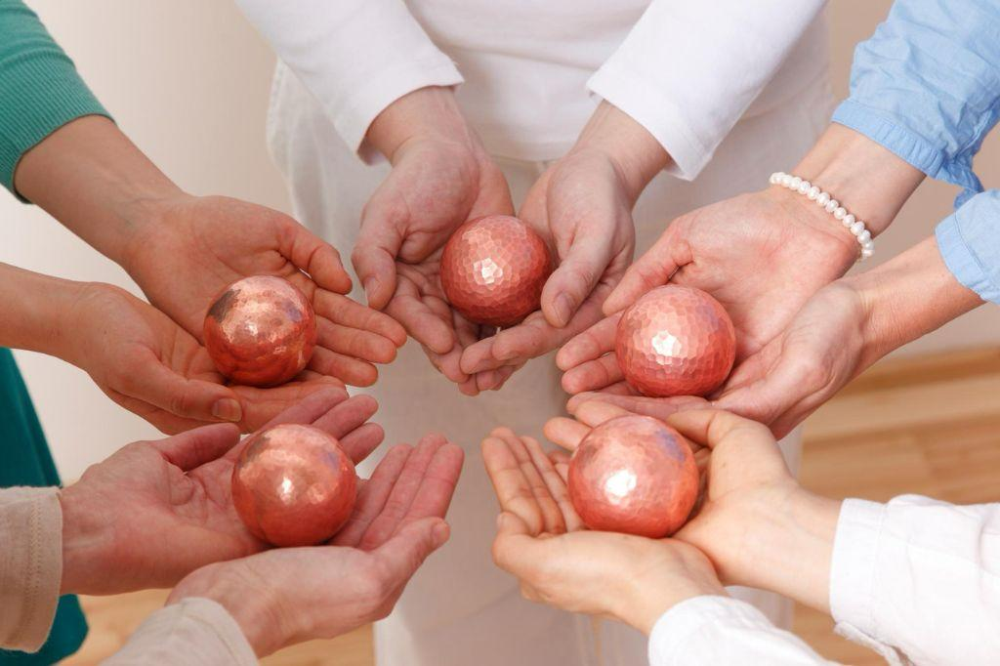

מה הצוות מרגיש בפועל?
עומס ושחיקה.
קושי להקשיב באמת זה לזה.
תחושת “כל אחד לעצמו”.
רצון לבנות תרבות צוותית חיה ומחוברת.





הקשבה - תנועה - בניית קהילה




האוריתמיה מאפשרת לראות את מה שפועל בדרך כלל מתחת לפני השטח: את איכות המפגש, את האיזון בין הובלה והיענות, את היחסים בין היחיד לקהילה ואת הכוחות המבקשים להתפתח בתוך הצוות. מתוך החוויה עולות תובנות מעשיות המלוות את עבודת הצוות גם לאחר הסדנה. תנועה פשוטה, תרגילים קבוצתיים ושיח מונחה, הסדנה מאפשרת לצוות להתבונן בדפוסי העבודה שלו בדרך חווייתית ומעשית.
המשתתפים אינם רק מדברים על שיתוף פעולה - הם חווים אותו בגוף, במרחב ובמפגש עם האחר.
אין צורך בניסיון קודם באוריתמיה או בתנועה.

חוויה שממשיכה להדהד בעבודת הצוות היומיומית.
אני מביא שילוב ייחודי של ניסיון חינוכי מעשי, הכשרה אמנותית-תנועתית מעמיקה והבנה אנושית של תהליכי צמיחה והתפתחות. לאורך השנים פעלתי כמחנך בבית ספר ולדורף, גנן, רכז בפנימייה טיפולית, מורה בהכשרת אוריתמיה ומלווה קבוצות חינוכיות טיפוליות.
המסע המקצועי שלי עבר דרך לימודי אוריתמיה בשווייץ ובגרמניה, לצד עבודה יומיומית עם ילדים, בני נוער, אנשי חינוך, צוותים וקהילות. שילוב זה מאפשר לי לחבר בין רעיונות חינועיים עמוקים לבין כלים מעשיים של תנועה, נוכחות והקשבה.
הייחודיות שלי היא ביכולת ליצור מרחבים שבהם אנשים אינם רק לומדים ידע חדש, אלא פוגשים מחדש את היצירתיות והמשמעות בעשייה שלהם. אני עובד עם צוותים חינועיים, מוסדות ולדורף, ארגונים וקהילות המבקשים לחזק את החוסן האנושי, את איכות שיתוף הפעולה ואת הקשר בין האדם לבין שליחותו המקצועית.
הסדנאות והליווי שאני מציע נשענים על ניסיון במרחב האנתרופוסופי והחינוכי, ומותאמים לצרכים הייחודיים של כל ארגון, צוות או קהילה. המפגש בין אוריתמיה, חינוך והתפתחות אנושית יוצר תהליך חי, מעשי ועמוק, המאפשר לאנשים ולמערכות לגלות מחדש את מקורות החיוניות וההשראה שלו.
יצירת קרקע בטוחה למפגש.
חוויה משותפת של המרחב.
חיבור החוויה לחיי העבודה היומיומית.
שיחת היכרות קצרה, ללא התחייבות — נתאים יחד את הסדנה לצרכים של הקהילה שלכם.
לתיאום שיחת היכרות ללא התחייבות